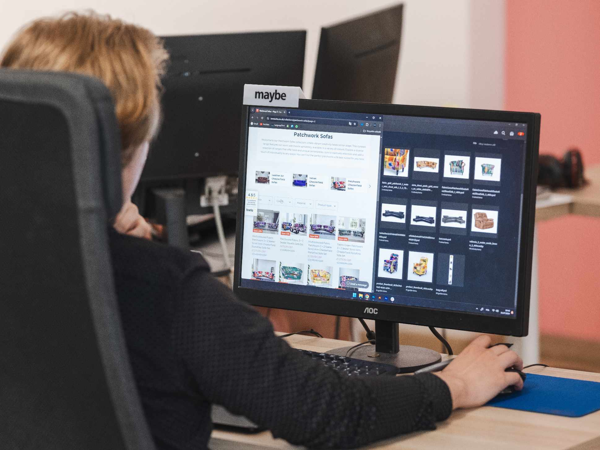

|

*zdjęcie wykonane podczas pracy w Maniac Ldt. |
Nazywam się Mikołaj Radka i jestem 23-letnim grafikiem komputerowym z Poznania. Specjalizuję się w profesjonalnym projektowaniu graficznym, oferując usługi takie jak tworzenie identyfikacji wizualnej, projektowanie stron internetowych oraz grafika cyfrowa. Moje projekty wyróżniają się estetyką, precyzją i dopasowaniem do potrzeb klienta, co sprawia, że skutecznie wspierają budowanie rozpoznawalności marki. Współpracuję z firmami z różnych branż, zapewniając kreatywne i nowoczesne rozwiązania graficzne. Jeśli szukasz grafika komputerowego w Poznaniu, który stworzy unikalny projekt dla Twojej marki zapraszam do kontaktu i zapoznania się z moim portfolio. |